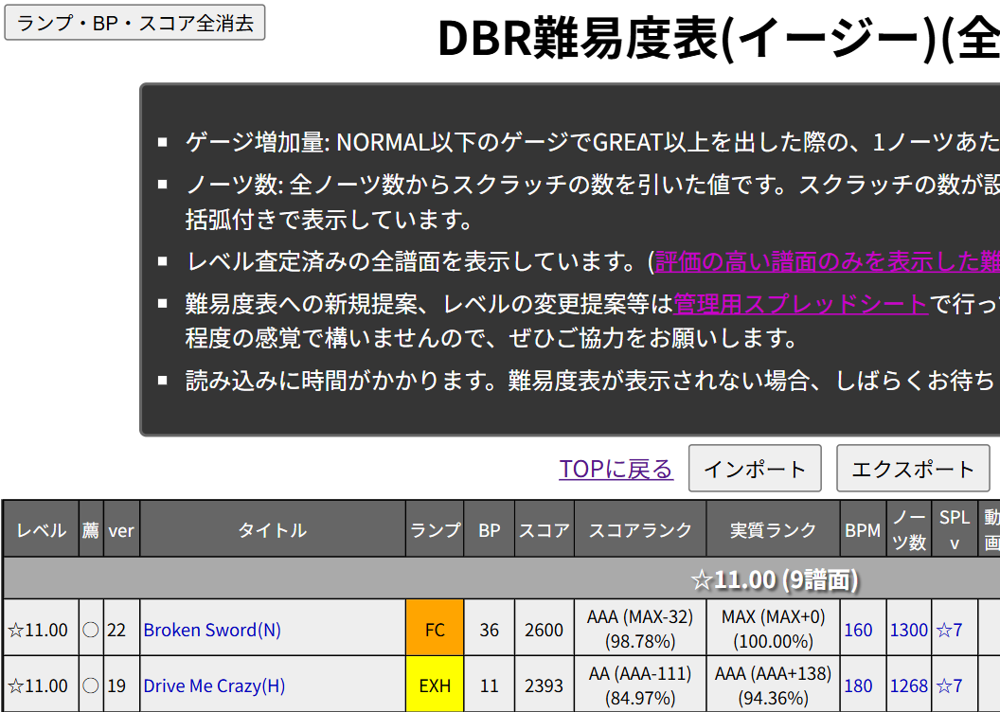
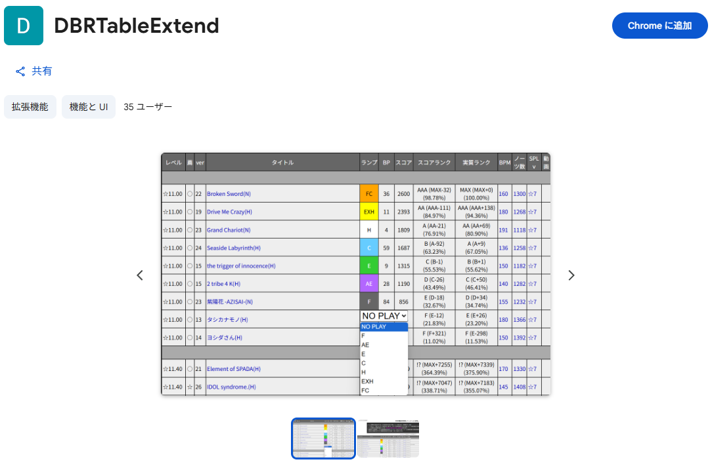
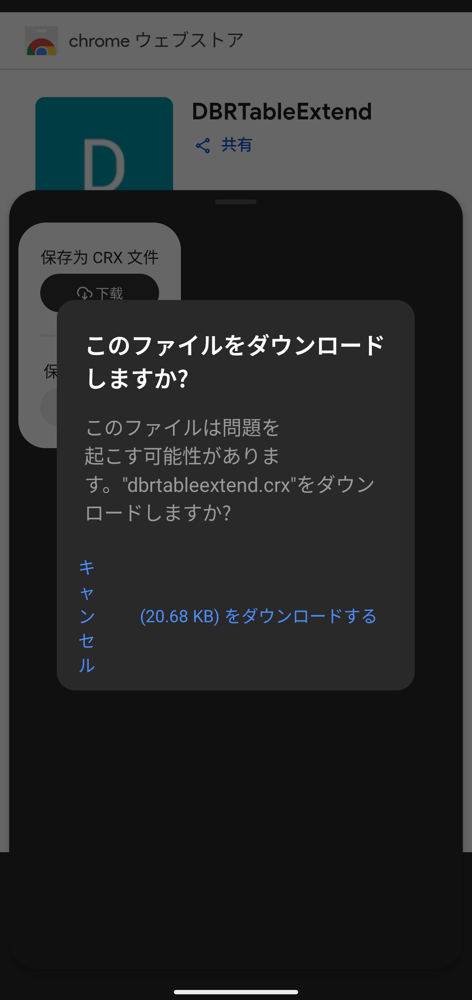
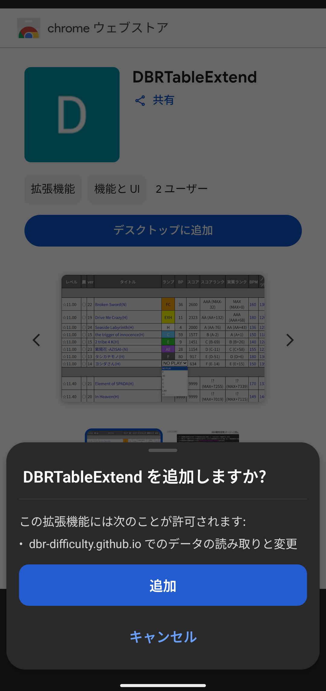

拡張機能
- PC版Google Chrome向け拡張機能です
- インストールはこちら 詳しくは【導入】を参照してください
- 導入は自己責任でお願いします
TOPに戻る
【概要】
しっかりプレー内容を管理したい人向けの便利機能です
クリアランプ、BP、スコアの入力列と、スコアランクを2種表示します

よって増えます
入力情報は即時ブラウザに保存されます
スコアを入力した場合、実際に筐体で表示される「スコアランク」と、スクラッチを抜いた実質ノーツ数から計算した「実質ランク」の2つを表示します
（v1.2.0から）スコアレート表示を追加しました！表示の都合上、スコア入力時は譜面情報を1行で表示できなくなりますが、ご了承ください
DBR難易度表(イージー)各種で共通して使用できます
（逆にAC、INF用で保存内容を分けたりはできないのでご注意ください 用途別にChromeを利用するアカウントを分ければ一応可能ですが……）

また保存内容全消去のボタンが左上に、インポート、エクスポートのボタンが「TOPに戻る」の右側に表示されるようになります
JSON形式で保存内容のインポート、エクスポートが行えます
バックアップの保存や、何らかの理由でデータの移行をする場合に使用してください
【導入】
[Chrome に追加]をクリック後、[拡張機能を追加]をクリックしてください

今後もしアップデートがあった場合、Chrome ウェブストア経由でインストールした拡張機能は自動で更新してくれるそうです
ありがたいですね
現在のバージョンはv1.2.0です
更新内容はChrome ウェブストアの概要欄をご参照ください
Chrome側で自動更新が行われる想定ですが、更新タイミング前であったり更新に失敗した場合用に、
バージョン確認の手順と強制バージョンアップ方法をご紹介します
- 設定メニュー内の[拡張機能]を選択するか、URLに
chrome://extensions/を入力してください
- 「DBRTableExtend」の[詳細]をクリックしてください
（1.でchrome://extensions/?id=dmjbmmiigiiojijpflffmojdkdoepbgaと入力した場合、直接詳細ページに遷移します）
- 「バージョン」が上記と異なっている場合、右上にある[デベロッパー モード]をONにしてください
- 上部に[更新]ボタンが出現するのでクリックしてください
- バージョン情報が新しくなっていることを確認してください
- 作業後、特に必要でなければ[デベロッパー モード]をOFFにしてください
公開当初に野良拡張として導入いただいた方は、アップデートをする場合に再インストールが必要です
再インストールする場合は設定メニュー内の[拡張機能]を選択するか、URLにchrome://extensions/を入力、
「DBRTableExtend」を削除していただき、[デベロッパー モード]を必要が無ければOFFにし、改めて上記リンクから導入してください
（ちなみに削除せずインストールすると列が倍表示されますが、最後に入力した方に同期されるので、意味がありません）
※再インストール後もデータは保持されている想定ですが、念のためエクスポートを行ってからの作業を推奨します
【Androidでの拡張機能使用】
※自己責任でお願いします
アップデートを行う場合、再インストールが必要です
こちらも念のためエクスポートを行ってからの作業を推奨します
スマホブラウザ@ウィキ / AndroidでChrome拡張機能の使えるブラウザ
上記リンクの「Microsoft Edge Canary」部分を参照してください
URL直打ちでもEdgeの拡張機能経由でもこちらで用意した.crxファイルでも構いませんが、
何かしらの方法で.crxファイルを入手し「Extension install by crx」で追加してください

Chrome ウェブストアから.crxファイルをダウンロード

Extension install by crxでインストール
PCとデータを同期したい場合、かなり面倒ですがインポート/エクスポート機能で.jsonファイルを受け渡ししてください
エクスポートしたら自分宛のメールに添付するなり、Discordで自分しか入っていないサーバーに上げるなり、お好みでどうぞ
念のため次項【インポート/エクスポートの仕様について】を参照してからの作業を推奨します
【インポート/エクスポートの仕様について】
この拡張機能の場合、最初の何も入力されていない状態では一切データが入っていません
○○○(A)_スコア：「xxxx」のように、入力した時に初めてその曲のデータが保存されます
が、一度何か入力した後に入力値を削除した場合でも、その曲のデータが残ります（○○○(A)_bp:「」のようなイメージです）
エクスポートの場合、この未入力状態にしたデータも出力されます
インポート時は.jsonファイルにデータが入っている列のみ上書きしますが、
この未入力状態のデータでも上書きしてしまうので注意してください
（v1.1.0から）自己ベストを考慮したインポートを行うように修正しました！
インポートする.jsonファイルと保存されたデータを比較して、より良い結果の場合のみ更新されます
エクスポート側に未入力データや古いランプ・BP・スコアが保存されていても大丈夫です
例えば、同期のためAndroidからエクスポート→PCにインポートを行う場合、
PC側で更新していた記録の方が良いものであれば、置き換わりません
【クリアランプマネージャーのランプ状況をインポートする】
beatmaniaIIDXクリアランプマネージャーで記録しているランプ状況を、この拡張機能でインポート可能なjsonファイルとしてダウンロードします
取得にはブックマークレットを使用します 公式CSVが提供されてから意外と月日が経っている今日この頃、馴染みの薄い方も多いかもしれません
【事前準備】
【PCの方】
DBRランプ状況取得
このボタンをお気に入りバーにドラッグ&ドロップしてください
【スマートフォンの方、上記方法でうまく行かない方】
javascript:(function(){var s=document.createElement('script');s.type='text/javascript';s.charset='utf-8';s.src='https://dbr-difficulty.github.io/files/convert-lampdata.js';document.head.appendChild(s);})();
- [ブックマークレットをコピー]を押すと、ブックマークレットのコードがコピーされます
- このページでもどこでもよいので、ブックマークを新規登録してください
- そのブックマークのURL欄に、コピーしたコードを貼り付けてください
ブックマークの名前は変えなくてもよいですが、後で使用用途がわかりやすい名前にしておくのをおすすめします
【使用方法】
クリアランプマネージャーを開き、
「/djdata/{自分のID}/sp/」のページで使用してください（SP表示を優先している方は「/djdata/{自分のID}」でもOK）
必ず「SPモード」になっていることを確認してから、登録したブックマークを開いてください
正常に実行されると「lamp_data_{DJNAME}_YYYYMMDD.json」が自動でダウンロードされます
ダウンロードされた.jsonファイルを、DBR難易度表でインポートしてください
☆6以下（現状シートがありません、データ量の関係で提案された曲のみ登録していく予定です）とNO PLAYは出力されません
それ以外で出力されていない曲、未査定表にもデータがない曲があれば管理用スプレッドシートの「修正依頼」シートにご報告をお願いします
※このブックマークレットに関するご質問・ご要望は修正依頼シートまたは管理人Twitter（＠DBR_Difficulty）にお願いします
非公式、無関係の機能ですので、クリアランプマネージャー様へのお問い合わせは厳に慎んでください
アップデートを行う場合、再インストールが必要です
こちらも念のためエクスポートを行ってからの作業を推奨します
【その他】
表も含めてですが、大部分は素人がChatGPTを突っついて作らせているので変なバグり方したらすみません
現状Chrome向け拡張機能はPC版でしか使用できないようです
クリアランプマネージャーのようにスマートフォンから使用することはできません アーケードゲームなのに……
Kiwi Browserなど拡張機能をサポートするブラウザも存在するようですが、動作するかは不明です
【Androidでの拡張機能使用】に記載した通り、Microsoft Edge Canaryを使用した動作確認を行いました
DBR難易度表(イージー)(未査定有)は表メンテナンスや提案検討のために作成したページです
性質上トップページでは隠し項目としていますが、
※新規提案機能を含むモーダル機能実装のため、未査定有の表を正式に公開しました
この拡張機能を使用した場合は未査定曲に対してもランプ、BP、スコアが保存できますので、
☆7以上の全ての曲でプレー内容の保存ができるようになります（データ量の都合上、☆6以下は提案があった曲のみ反映します）
クリアランプマネージャーのような使い方もできなくはありません 有効に使っていただければと思います
→
あちらからインポートできるようにしました お好みで使い分けてください
データはタイトルに対して持つようにしていますので、未査定曲がその後表入りしてもそのままお使いいただけます
注意事項として、データ保存後にタイトルへの誤字修正があり、
かつ最後にプレーデータを更新したタイミングまでにTexTageのリンクが存在しなかった曲に関しては、データが復元されません
※内部的にはデータが残っていますので、記録したはずなのに……と思った方は、
お手数ですがエクスポートした.jsonファイル内のデータを参照して復旧してください
また、ブラウザのキャッシュクリアを行った場合にデータが消えてしまいます
（一応削除時に「Cookieと他サイトデータ」のような項目を選ばなければ消えませんが……）
その他不慮の事故等も考え、時折エクスポートしてバックアップを取ることをおすすめします
未査定曲は性質上INF有無などのデータが揃っておらず、特にスクラッチ数はほぼ表入りまで空なので実質ランクが役に立たなくなるのは、すいません
未査定データを整備し、TexTageで確認できない譜面を除くほぼ全譜面にスクラッチ数を入れました ご活用ください
（データの不足や不備について、修正依頼シートに情報提供いただくのは歓迎です）
ちなみにChrome Web Storeにデベロッパー登録するには$5かかります
もし$5が惜しくない方がいれば@DBR_Difficultyにだいたいそれぐらいのブツを渡してもらえれば登録します
上げても審査落ちするかもしれませんが……
なんと！本当にいただいてしまいました……！むらさき(@196DX)様、ありがとうございました！！
おかげさまであの Google LLC お墨付きの拡張機能になりました Rakuten Card Co., Ltd. には不審がられました
あとはTampermonkeyとかに対応させれば他ブラウザでも使用できるかもしれませんが、わかりません
物好きな方は中身を入手して弄ってみてください